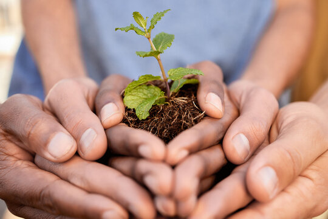

About Us
Feeding Hands is a non-profit organization dedicated to alleviating hunger and providing essential nutrition to underprivileged communities. Through compassionate outreach and sustainable programs, we strive to ensure no one goes to bed hungry..
Our Story

Feeding Hands was born from the belief that no one should have to endure hunger. It all started with a group of compassionate individuals who noticed the rising need for food security in their community. From humble beginnings, distributing meals to a few families, our efforts have expanded to reach thousands of people every month.
What drives us is the desire to make a lasting impact. We work tirelessly to provide not just food, but hope and dignity to those we serve. Our team, made up of dedicated volunteers and donors, is the backbone of our success, as we continue to grow and innovate to meet the needs of our community.
As we look to the future, Feeding Hands is focused on scaling our programs and partnerships to reach even more communities in need. With your support, we hope to expand our reach, offer more sustainable solutions, and build a world where hunger is no longer a barrier to a better life for anyone.
Our Core Values
Community Collaboration
We believe in the power of communities working together to create sustainable change.
Innovation
We embrace new ideas and approaches to environmental challenges.
Environmental Justice
We work to ensure that environmental benefits and burdens are shared equally.
Education
We promote environmental literacy and empower through knowledge.
Our Team
Dr. Sarah Johnson
Executive Director
Environmental scientist with 15+ years of experience in conservation projects.
Miguel Sanchez
Community Outreach Director
Former community organizer passionate about grassroots environmental movements.
Dr. Aisha Patel
Research Lead
Specializes in sustainable agricultural practices and food security.
Thomas Nguyen
Education Program Manager
Former teacher dedicated to environmental education and youth engagement.
Join Our Mission
Be part of the solution. Together, we can create a more sustainable and equitable world.